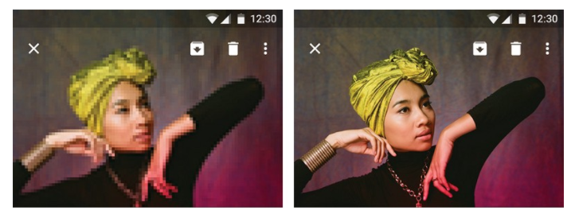
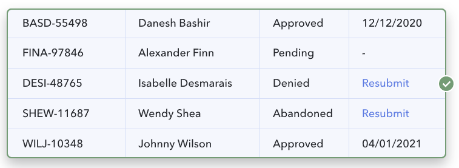

Best practicies pro UX
Obrázky:
Obrázky by měli být vložené v dobré kvalitě
Měli by být jednoduché a výstižné
zaměřte se na smysluplné prvky ve svých obrázcích
Nejlépe používejte své vlastní fotky a obrázky

Tabulky:
zobrazení vodorovných čar obsahuje spoustu volného prostoru a zároveň pomáhá uživateli udržet místo čtení tam kde chce
Vše, co se skládá z písmen, by mělo být zarovnáno doleva.
Přizpůsobte zarovnání nadpisu sloupci
Vyhněte se duplicitě
